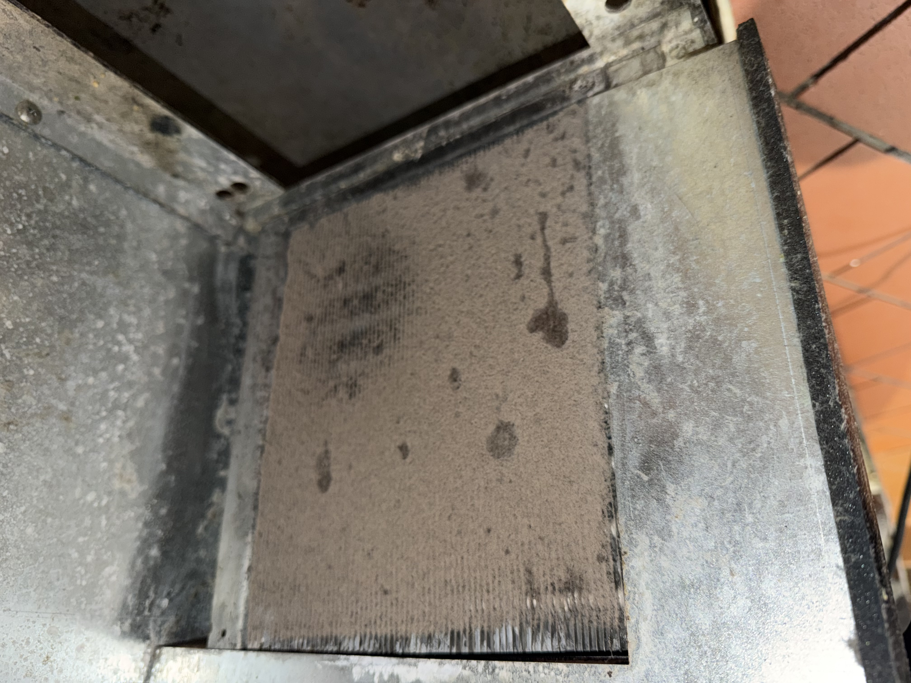
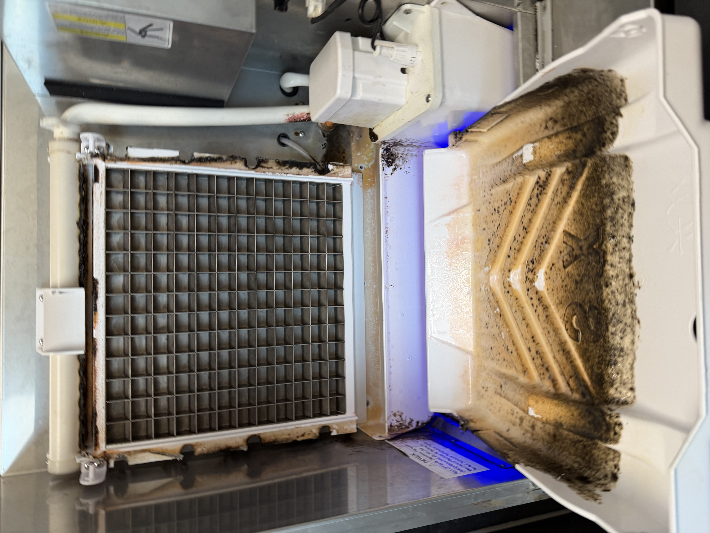
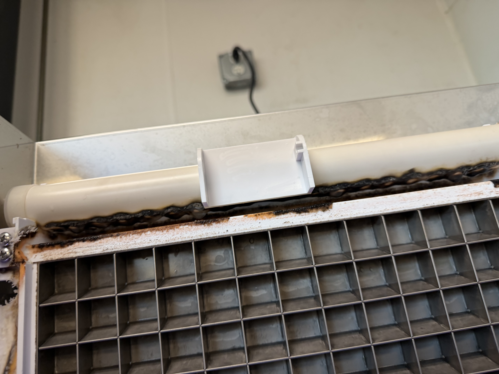
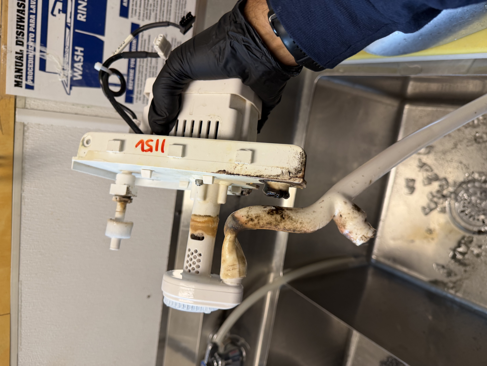
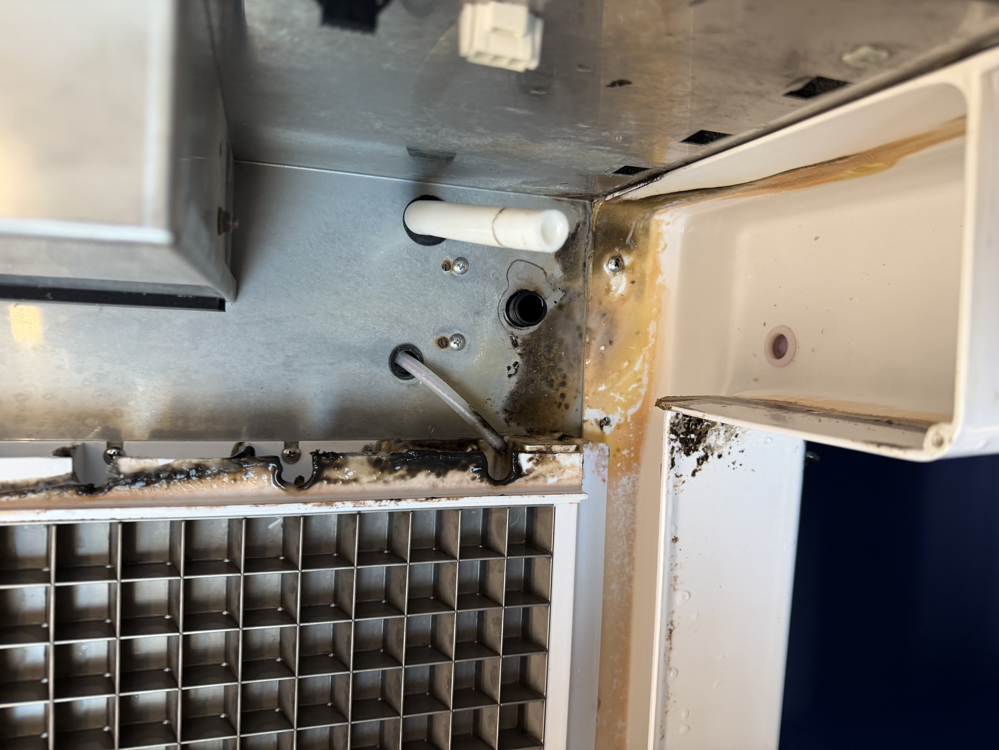
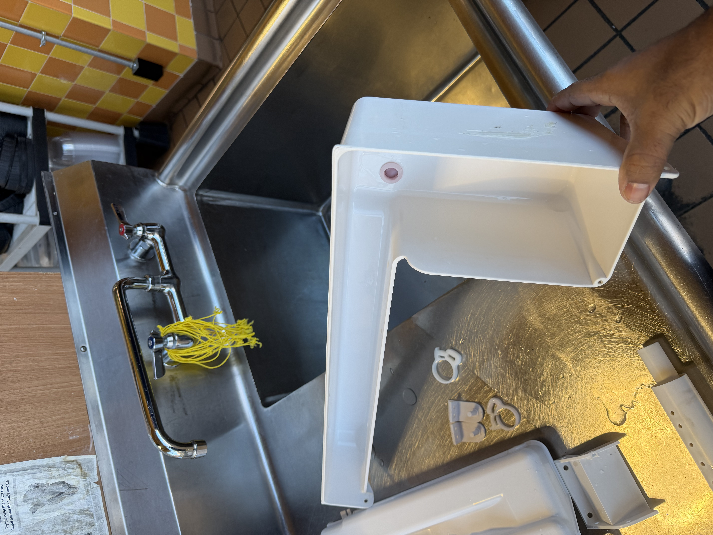
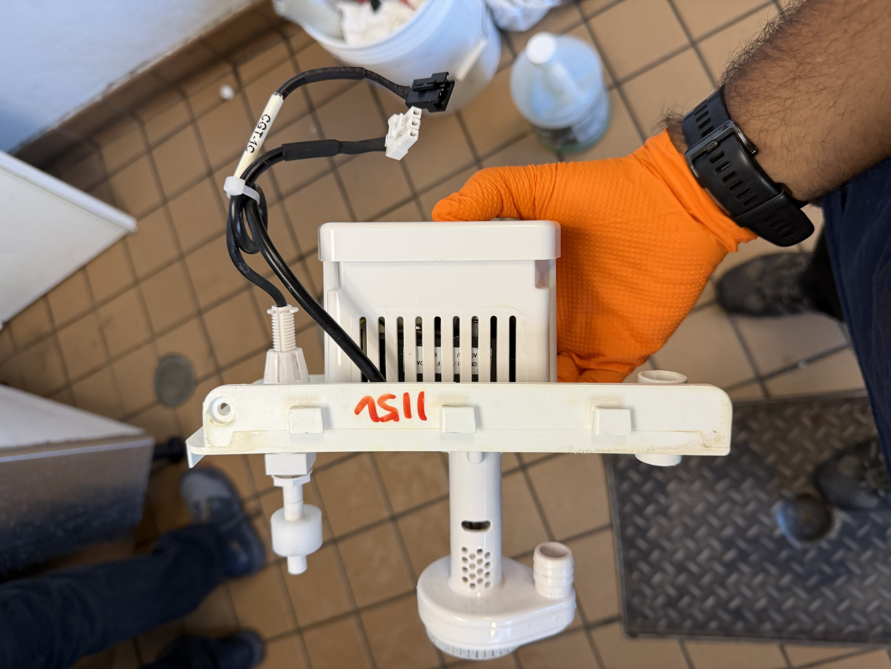

Walk-In Cooler Preventive Maintenance
For cooler coil cleaning, temperature verification, airflow review, drain inspection, and catching obvious wear before it turns into downtime.
Starting at $195Restaurants, cafes, bars, and hospitality spaces do not have room for preventable refrigeration and comfort issues. A1 Property Pros helps Boston-area operators stay ahead of walk-in, freezer, ice machine, and HVAC problems with practical maintenance, trusted local service, and fast response when timing matters.
We focus on the equipment and maintenance tasks that matter most for restaurant uptime, food safety, and guest comfort. That includes refrigeration, ice production, filters, coils, airflow, and recurring checkups that help you spot wear before a failure happens during service.
Coil cleaning, temperature checks, drain review, gasket observations, airflow, and basic condition reporting.
Preventive maintenance and operational checks to help reduce ice buildup, airflow restrictions, and avoidable performance issues.
Cleaning, descaling, visual inspection, and maintenance support that helps protect quality and consistency.
Filter service, basic HVAC cleaning, and comfort-system support for front-of-house and back-of-house spaces.
The best restaurant HVAC/R program is the one your team can actually stay on top of. We keep scopes simple, document what we see, and build recurring maintenance around your hours and equipment mix. All prices shown here are starting rates, and final pricing depends on equipment condition, access, and the exact scope of work.
For cooler coil cleaning, temperature verification, airflow review, drain inspection, and catching obvious wear before it turns into downtime.
Starting at $195For freezer condition checks, coil service, ice buildup review, and preventive maintenance meant to support stable operation.
Starting at $225For sanitation-minded operators who need a cleaner machine, better performance visibility, and a recurring maintenance option.
Starting at $175Custom recurring visits for restaurants, bars, cafes, and hospitality properties that want refrigeration and HVAC support on a schedule.
Custom pricingRestaurant refrigeration problems do not always start with a full breakdown. More often, they build up quietly through restricted airflow, deteriorating coil condition, and damaged fan components until the system struggles to hold temperature consistently.
Here is a real example of a neglected walk-in cooler/freezer evaporator section. The coil is heavily deteriorated and restricted, and one of the fan blades is broken. Conditions like this reduce airflow, make the system work harder, and can leave the box struggling to cool or freeze the way it should.
This is why recurring PM matters for restaurants, bars, cafes, and hospitality properties. Catching this kind of wear early is usually far less disruptive than dealing with product loss, emergency service, or equipment downtime during operating hours.


Not every refrigeration problem starts with a major breakdown. In many kitchens, buildup inside reach-in units slowly reduces airflow and efficiency until the equipment struggles to hold temperature the way it should.
These photos show two real before-and-after cleaning examples from a restaurant maintenance visit: one reach-in cooler and one reach-in freezer. Dust, grease, and debris buildup on these smaller refrigeration units can restrict airflow, reduce efficiency, and make temperature control less reliable over time. Cleaning the coil and filter sections helps the equipment breathe better and support more consistent holding temperatures.
Reach-ins are easy to overlook because they are smaller than walk-ins, but they are often some of the hardest-working refrigeration units in the kitchen. Staying ahead of buildup helps protect both performance and product.



Restaurant HVAC/R service is not only about refrigeration. Kitchen exhaust and ventilation equipment take a lot of wear, and when major components are worn out, the system can become less reliable and harder to keep operating safely.
These photos show a worn kitchen exhaust fan assembly from a commercial kitchen roof installation. The unit itself and its drive components show the kind of age and wear that often lead to weaker performance, noisier operation, and a higher risk of breakdown if the problem is left alone.
This kind of field example is why routine rooftop checks matter for restaurants and commercial kitchens. It is usually better to spot severe wear during maintenance than to discover it after the fan goes down.


Ice machine service is about more than making the machine run. It also means breaking the unit down, cleaning the parts that carry and circulate water, and addressing the buildup that can affect ice quality, production, and sanitation.
These photos show a real ice machine maintenance visit with the top cabinet opened up and the major internal components removed for cleaning. The water reservoir, water feed pipe, ice-making evaporator module, tray components, and water pump all showed the kind of buildup that needs to be cleaned out to keep the machine operating properly.
For restaurants, bars, cafes, and hospitality properties, ice machine maintenance is one of the easiest places to fall behind because the equipment may still appear to be working until performance or sanitation problems become harder to ignore.









We keep the process simple so managers, chefs, and owners can get what they need without slowing down operations.
Share the location, equipment types, service hours, and whether this is a one-time visit or ongoing PM request.
We recommend the right starting service, pricing range, and best time window for the property.
On-site work is handled efficiently with a focus on cleanliness, communication, and minimizing disruption.
We let you know what was serviced, what should be watched, and whether a recurring maintenance plan makes sense.
Send the equipment list and location, and we will help you map out the right next step. Fast response is available for urgent scheduling needs.
Request Restaurant HVAC/R Service